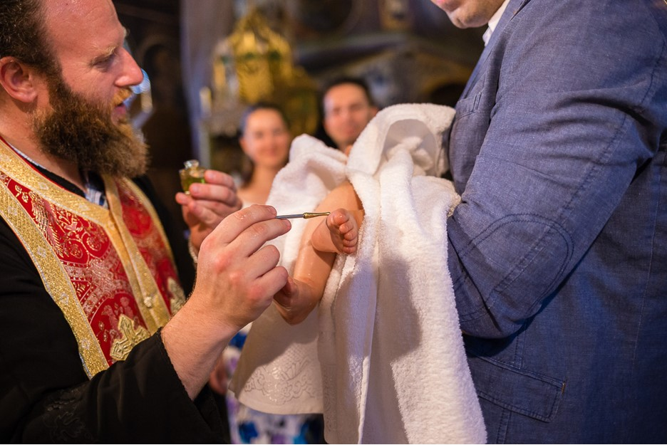

Кръщението е едно от седемте тайнства, в които естествено встъпва всеки един православен християнин. При кръщението се издейства или символизира очистване от греха, както и смърт на стария човек (за стария живот) и възкресение за нов живот на вярващия човек. Обикновено, кръщението трябва да стане още докато детето е малко, или дори бебе.
Самият ритуал "Свето Кръщение" може да се извърши в църква или манастир. Действията извършвани при Кръщенето са следните:
- Отричане от сатаната. Отрича се целия мироглед, основан на гордост и себелюбие, който отделя човека от Бога.
- Изповядване на Христа. Тук кръщаваният заявява, че се съчетава с Христа. Този избор се потвърждава с произнасяне на Символа на вярата.
- Помазване с миро(елей). Елеят е символ на светлина и радост, на живота като пълнота, на изцеление, но и символ на помирение.
- Свещеникът миропомазва във формата на кръст кръщавания по челото, гърдите, ушите, ръцете и нозете. Това е символ на пресътворяване на тялото на човека и сетивата му. 
- Преобличането с дрехи в бял цвят е символ на прераждането на човека-духовна чистота и невинност, получени чрез Светото тайнство Кръщение.
- Горящите свещи в ръцете и ритуалните три обиколки около купела са символ на духовна радост. Пламъка на свещите е знак, че новопокръстеният поема отговорносттта пред себе си и Бога винаги да гори духом. Кръгът около купела, символизира вечната принадлежност на кръщавания с Исус Христос.
- Подстригването на косите на стъпващия в Христовата вяра символизира готовността му за покорство и саможертва.


Оферта за Кръщенето на Вашето дете, може да получите, след като отправите запитване лично или на посочения имейл адрес.


- © Untitled
- Design: HTML5 UP